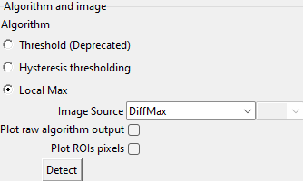
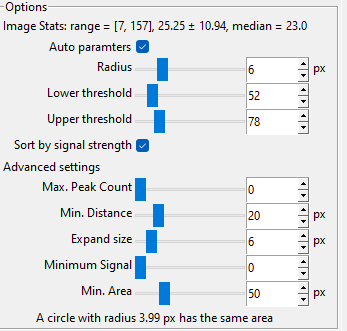
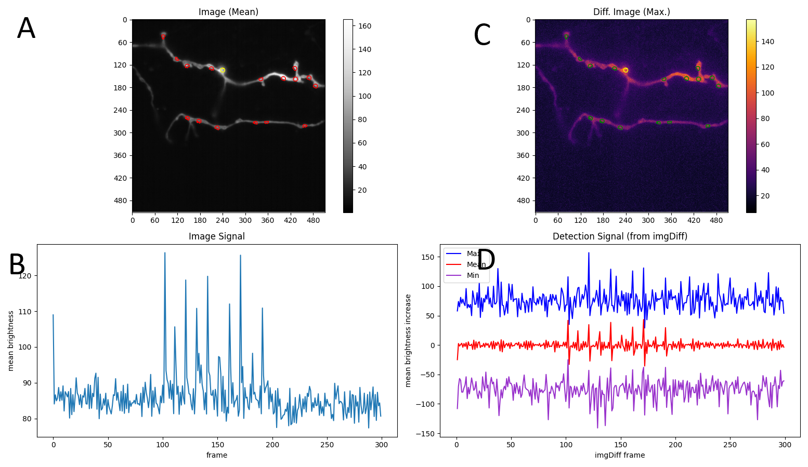

Tab ROI Finder
Note
Key features and short summary:
This tab is the main feature of Neurotorch
It allows you to detect the location of synapses, which are called ROI (region of interest)
Choosing the right algorithm and parameters is tricky at first, but mandatory to find any valid results. Take some time to read the docs!
Export or import your result to ImageJ, TraceSelector (if installed) or as a multimeasure csv file
The ROI Finder tab is one of the core features of Neurotorch as you can find here the synapse detector. ROIs (regions of interest) is a term adapted from ImageJ and is defined in Neurotorch as a region in an image (usually a synapse or similar structure). A ROI in ImageJ can have a variety of shapes, but Neurotorch currently support two types: Circular and polygonal ROI.
The typicall workflow would be to open an image (for details see First steps), parameter choosing and then clicking the Detect button in the upper left. While Neurotorch tries to guess the parameters for most algorithms, you still should understand what they mean and change them if necessary (Detection Algorithms)
Workflow
Algorithm
–> For choosing an algorithm, see Detection Algorithms
Image Source: The source for the detection algorithm. For example when you have noisy image, you should use DiffStd (standard deviation of difference image) rather than DiffMax (maximum of difference image). You can also use a single signal frame (use the Signal Tab [Tab Signal] to find them) as source as well. The DiffMax without signal option allows you to detect synapses apart from the bright signal frames (for example spontanous releases)
Plot raw algorithm output: Some algorithm provide aditional details on their internal steps. For details, see Detection Algorithms. If present, they will be plotted as a bright overlay in the source image plot (upper right)
Plot ROI pixels: If selected, the actual pixels of the ROIs will be plotted as yellow pixels in the microscopic image (upper left)
Options (algorithm parameters)
Setting proper parameters is important. For details, see Detection Algorithms
Output
A: The microscopic video displayed as mean image + the detected ROIs (the selected one is yellow, the others red)
B: The difference image as input for detection, depending on what you selected as image source
C: The image signal as slice of the mean value at each frame in the given ROI
D: The detection signal averaged per frame in the selected ROI
Image A and B support clicking on ROIs, which selectes them in the tree view
Use the navigation to zoom into the image. You can also zoom into the colorbar right to each plot. Use the home button to reset
To save the plots, you find a button in the navigation bar below.
The result of the detection is summarized in the so called synapse tree view. Use the right click menu to add, modify or delete them. Double click to expand a node. You can modify the following values:
Name of a synapse (use right click menu to reset to default)
Radius of circular ROI
Location of circular ROI
The stage is a feature to keep some synapses for comparison when loading a new image. Staged synapses appear purple and will not be deleted when rerunning the detection.
Use the context menu also for importing from ImageJ and exporting to TraceSelector, ImageJ or a file.